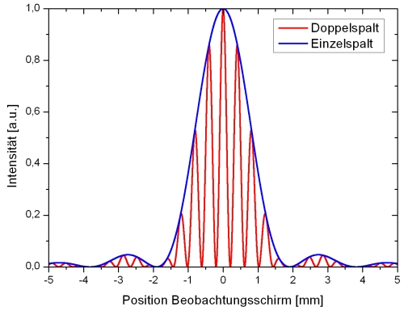
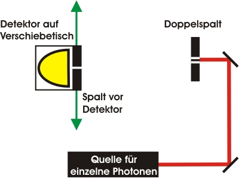
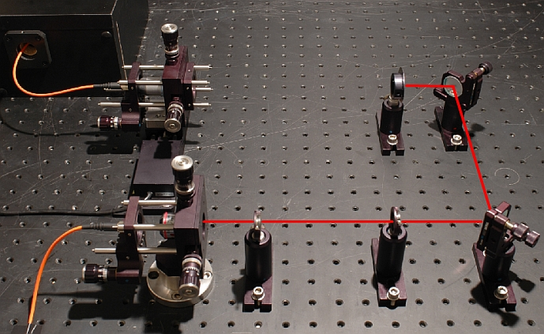
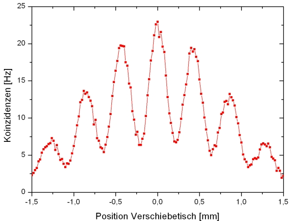
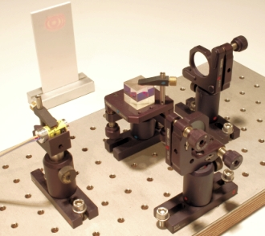
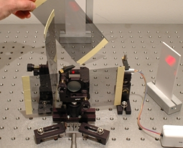

Interference Chapter 6:
Interference and diffraction at the double-slit
One of the most popular experiments on quantum physics is the double-slit experiment. Young [You04] showed the wave nature of bright light in an experiment in the year 1802. The experiment was carried out by Jönson [Joe61] with single electrons in 1961. Over the past few years, double-slit experiments with single neutrons [Zei88], single atoms [Car91] and single molecules [Arn99] were carried out. To this day, the border between quantum mechanics and the classic world is being analyzed at the double-slit, with increasingly massive molecules. On the following page, the double-slit experiment is carried out initially with bright light and then with single photons. At the bottom of the page it is explained why the interferometer is more suitable for use in school education than the double-slit experiment.
Theoretical description
The experiment on the double-slit consists of a light source, the actual double-slit and an observation screen (pic. 1 left). At the double-slit (pic. 1 right) either both slits may be open or one slit may be covered.
pic. 1: left: Set-up of the double-slit experiment, right: double-slit made of metal
First, one slit of the double-slit is covered. With bright light and the single slit, an intensity pattern from far apart bright and dark lines can be observed on the observation screen. The physical explanation of the observation is the diffraction of light which is a typical wave phenomenon. Now, both slits are opened. On the observation screen, again there is an intensity pattern made up of close-lying bright and dark lines visible (pic. 2 - red curve). The physical explanation for this lies in interference and the diffraction of light.

pic. 2: Calculated intensity distribution on the observation screen
Experiment with intensive light
For the double-slit experiment, monochromatic light (e. g. laser light) is not necessary, as it is not the time coherence, but the space coherence of the light which is the decisive factor. The time coherence length of the light source can be nearly arbitrarily small. The interference pattern can be observed with a standard candle as a light source. In picture 3 left, the experiment was carried out with the light of a halogen lamp, while the interference pattern was recorded using a webcam with a green bandpass filter. In picture 3 right, the interference picture was recorded with intensive laser light of 633nm wave length without a bandpass filter.
pic. 3: Interference pattern of a double-slit in bright light
left: with halogen lamp and filter, right: with laser pointer
Experiment with single photons
An interference pattern can only be observed if two wave trains with a fixed phase relation overlap. In the following, the behaviour of a single photon at the double-slit is to be observed. In the paragraphs on the existence of the photon and on quantum randomness it was shown that photons are indivisible portions. How do single photons behave at the double-slit?
To record the interference pattern, the observation screen must be replaced by a detector for single photons (pic. 4). The detector is situated on a translation stage which is run across the observed area. In order to be able to make a statement about the number of photons present at a defined place, the visual range of the detector is limited by a 50µm-wide slit.

pic. 4: sketch of the set-up of the double-slit experiment with single photons
We have put up the double-slit experiment (pic. 5) separately from the single photon source for reasons of better overview. Both parts are connected by glass fibre cable. The detection events are only evaluated if there is a trigger event at the same time. For recording the single photon events, the observation area is covered in steps of 20 µm.

pic. 5: experimental set-up with double-slit, translation stage and detector
In the measuring curve (picture 6), the interference pattern at the double-slit can be seen clearly. The interference pattern appears even though there is only one single photon at all times during the experiment. Therefore it can be stated that the single photon interferes with itself at the double-slit. The number as well as the place of the interference maxima coincide with theory (picture 2) and with the measuring results in bright light. The visibility V of interference between two neighbouring maxima is only V=55%, which can be put down to the width of the slit (50µm) in front of the detector. The measuring with the detector this wide leads to an average value in the intensity pattern. The smaller the detector width, the better the visibility, while at the same time the coincidence rate is diminished. In the experiment, a compromise had to be found between an acceptable coincidence rate and visibility. Another reason for the mean visibility is the mode overlap due to the use of a multi mode fibre between the announced single photon source and the actual experiment.

picture 4: interference of single photons at the double-slit
Indivisibility, which-path-marking and the quantum eraser
The quantum features of interference, complementarity between which-path-information respectively interference and the quantum eraser can be observed with the double-slit as well as with the interferometer.
The single photon interferes with itself at the double-slit. Does that mean a photon splits up at the double-slit? This presumption was checked in the interferometer (chapter 3) with an additional beam splitter cube after the actual experiment. In this experiment it was found that a single photon shows interference, indivisibility and quantum randomness all at the same time.
Can it be proven at the double-slit which path (slit) the photon took? This was also checked in the interferometer (chapter 4). Here we found: Which-path-information and interference are mutually exclusive. Additionally, the erasing of the stamped which-path-information was shown exemplarily in the interferometer (Kapitel 4).
The path marking and the erasing of path information can also be observed in bright laser light at the double-slit. The phenomenon with bright light does, however, not have anything to do with quantum physics, as it can be explained with polarised classic electromagnetic waves. Waves with orthogonal polarisation cannot interfere, which is why the interference pattern disappears where there is a path marking. The experiment with bright light can still be of use as an analogy to the real quantum phenomenon, though. A double-slit experiment on the complementarity of interference and path information suitable for school purposes has been developed by Dr. Küblbeck. The double-slit in question can be purchased for 30€ from the MüroFräser company.
Double-slit experiment versus interferometer in educational use:
In an interferometer, both paths can be clearly discerned and stamped with polarisators the size of a hand (pic. 5 right). For explaining the measuring at the double-slit, as well as interference, the phenomenon of diffraction has to be tackled. With the interferometer, interference is sufficient. If the double-slit experiment is carried out with bright laser light, the interference picture of the double-slit can only be observed along a slim line. The round interference picture from a sturdy and compact school interferometer (pic. 5 left) can, by contrast, be widened to e.g. 0,5m and can be observed by all students in a class. At the same time, the inverse interference picture can be observed in the interferometer (pic. 5 right).
For the experiment with single photons, the interference picture can be focussed onto one point (chapter 1) in the interferometer and recorded fully by a stationary detector with a high data rate. In our experiments, the maximum coincidence rate K in the interferometer was K=1400Hz, at the double-slit it was only K=23Hz. A measuring can therefore be carried out quicker and more accurately in the interferometer. The visibility V of interference was V=99% in our experiments in the interferometer, while being only V=55% in the double-slit.
For demonstrating the quantum feature of interference, despite the popularity of the double-slit experiment we have decided in favour of the interferometer in our students' lab (german) (pic. 5 right) as well as for our interactive screen experiments.
 |
 |
pic. 5 left: sturdy interferometer for students' experiments with components from the Thorlabs company.
pic. 5 right: path marking and quantum eraser with handy polarisation filters in the students' lab
Original data from the experiment: Double-slit experiment
Back to overview
Autor: M. Fischer, P. Bronner, Januar 2009
Translation: G. Murphy